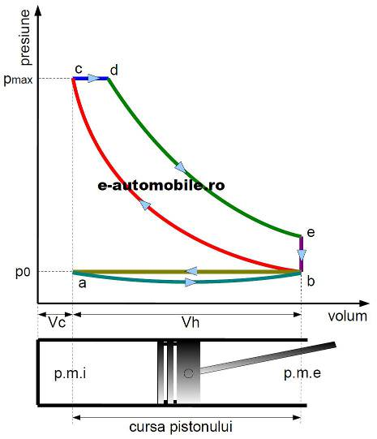

Motorul Diesel
by Dumitrescu Andrei

Motorul diesel este un motor cu ardere internă în care combustibilul se aprinde datorită temperaturii ridicate create de comprimarea aerului necesar arderii, și nu prin utilizarea unui dispozitiv auxiliar, așa cum ar fi bujia în cazul motorului cu aprindere prin scânteie.

Principiul de functionare
Comprimarea unui gaz conduce la creșterea temperaturii sale, aceasta fiind metoda prin care se aprinde combustibilul în motoarele diesel. Aerul este aspirat în cilindri și este comprimat de către piston până la un raport de 25:1, mai ridicat decât cel al motoarelor cu aprindere prin scânteie. Spre sfârșitul cursei de comprimare motorina (combustibilul) este pulverizată în camera de ardere cu ajutorul unui injector. Motorina se aprinde la contactul cu aerul deja încălzit prin comprimare până la o temperatura de circa 700-900 °C. Arderea combustibilului duce la creșterea temperaturii și presiunii, care acționează pistonul. În continuare, ca la motoarele obișnuite, biela transmite forța pistonului către arborele cotit, transformând mișcarea liniară în mișcare de rotație. Aspirarea aerului în cilindri se face prin intermediul supapelor, dispuse la capul cilindrilor. Pentru mărirea puterii, majoritatea motoarelor diesel moderne sunt supraalimentate cu scopul de a mări cantitatea de aer introdusă în cilindri. Folosirea unui răcitor intermediar pentru aerul introdus în cilindri crește densitatea aerului și conduce la un randament mai bun.
Tipuri de motoare diesel
Motoare Timpurii
Intenția lui Rudolph Diesel a fost aceea de a înlocui motorul cu abur ca sursă primară de energie pentru industrie. Motoarele diesel de la sfârșitul secolului XIX și începutul secolului XX foloseau aceeași formă și dispunere ca motoarele cu abur industriale: cilindri cu cursă mare, fără carter, supape exterioare, chiulase pentru fiecare cilindru și arbore cotit cuplat la un volant enorm. Curând, vor apărea motoare mai mici, cu cilindri verticali, în timp ce majoritatea motoarelor industriale de mărime mare și medie aveau tot cilindri orizontali, și întocmai ca motoarele cu abur, aveau mai mulți cilindri. Cele mai mari motoare diesel timpurii erau replici ale celor cu abur, cu lungimi impresionante, de câțiva metri. Acestea funcționau cu viteze foarte mici, în special datorită motorinei injectate cu ajutorul aerului comprimat, dar și pentru că trebuiau să corespundă majorității utilajelor industriale construite pentru motoarele cu abur, unde vitezele normale de operare se încadrau între 100 și 300 rpm. Motoarele erau pornite cu ajutorul aerului comprimat, care era introdus în cilindri și rotea motorul, deși cele mai mici puteau fi pornite și manual. În primele decenii ale secolului al XX-lea, când marile motoare diesel erau montate pe nave, acestea aveau forma motoarelor cu abur, pistonul împingea o tijă cuplată la o bielă ce rotea arborele motor. Urmând modelul motoarelor cu abur, s-au construit motoare cu dublă acțiune, unde arderea avea loc în ambele părți ale pistonului pentru a mări puterea. Acestea aveau doua rânduri de supape și două sisteme de injecție. Sistemul permitea, de asemenea, modificarea sensului de rotație, prin modificarea timpilor de injecție. Prin urmare, motorul putea fi cuplat direct la axul elicei, fără a mai fi nevoie de o cutie de viteze. Deși aveau o putere mare și erau foarte eficiente, marea problemă a motoarelor cu dublă acțiune era etanșeitatea camerelor de ardere. În anii 1930 s-a descoperit că montarea turbocompresoarelor era o soluție mai ușoară și eficientă.
Motoare Moderne
Motoarele diesel sau cu aprindere prin comprimare sunt în doi sau în patru timpi. Majoritatea motoarelor sunt în patru timpi, dar unele motoare mari funcționează în doi timpi, de exemplu cele de pe nave. Majoritatea locomotivelor moderne folosesc motoare diesel în doi timpi, cuplate la generatoare electrice ce acționează motoare electrice, eliminând nevoia transmisiei. Pentru creșterea presiunii în cilindri s-a folosit supraalimentarea, mai ales la motoarele diesel în doi timpi care au câte o cursă utilă la fiecare rotație a arborelui cotit. În mod normal, cilindrii sunt multiplu de doi, dar se poate folosi orice număr de cilindri, atât timp cât sunt eliminate vibrațiile excesive. Cea mai folosită configurație este cea de 6 cilindri în linie, dar sunt folosiți și 8 cilindri în V sau 4 în linie. Motoarele de mică capacitate (în special cele sub 5000 cmc) au de obicei 4 (majoritatea lor) sau 6 cilindri, fiind folosite la autoturisme. Există și motoare cu 5 cilindri, un bun compromis între funcționarea lină a unuia de 6 cilindri și dimensiunile reduse ale unuia de 4 cilindri. Motoarele diesel pentru întrebuințări curente (bărci, generatoare, pompe) au 4, 3, 2 sau chiar un singur cilindru pentru capacități mici. În dorința de a îmbunătății raportul greutate/putere s-au adus inovații privind dispunerea cilindrilor pentru a obține mai multă putere per cilindree. Cel mai cunoscut este motorul Napier Deltic, cu trei cilindri dispuși sub formă de triunghi, fiecare cilindru având 2 pistoane cu acțiune opusă, întregul motor având 3 arbori cotiți. Compania de camioane Commer din Marea Britanie a folosit un motor asemănător pentru vehiculele sale, proiectat de Tillings-Stevens, membru al Grupului Rootes, numit TS3. Motorul TS3 avea 3 cilindri în linie, dispuși orizontal, fiecare cu 2 pistoane cu acțiune opusă conectate la arborele cotit printr-un mecanism de tip culbutor. Deși ambele soluții tehnice produceau o putere mare pentru cilindreea lor, motoarele erau complexe, scumpe de produs și întreținut, iar când tehnica supraalimentarii s-a îmbunătățit în anii 1960, aceasta a rămas o soluție marginală pentru creșterea puterii. Înainte de 1949, Sulzer a construit, experimental, motoare în doi timpi supraalimentate la 6 bar, presiune obținută cu ajutorul unor turbine acționate de gazele de evacuare.